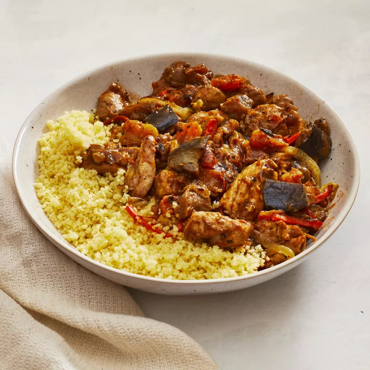

Heat olive oil in a skillet over medium-high heat. Place the chicken pieces and eggplant in the heated oil; stir and cook until the chicken is browned on all sides but not cooked through. Remove the skillet from the heat.
Place the browned chicken and eggplant on the bottom of a slow cooker. Layer the onion, carrots, dried cranberries, and apricots over the chicken.
Whisk together the chicken broth, tomato paste, lemon juice, flour, garlic salt, cumin, ginger, cinnamon, and ground black pepper in a bowl. Pour the broth mixture into the slow cooker with the chicken and vegetables.
Cook on High setting for 5 hours, or on Low setting for 8 hours.
Bring water to boil in a saucepan. Stir in couscous, and remove from heat. Cover, and let stand about 5 minutes, until liquid has been absorbed. Fluff with a fork.